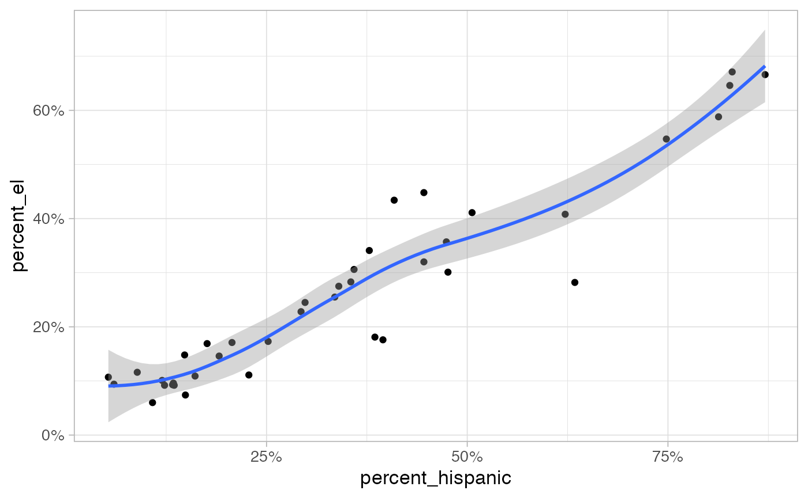
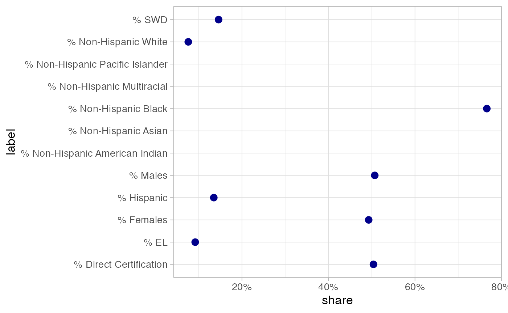
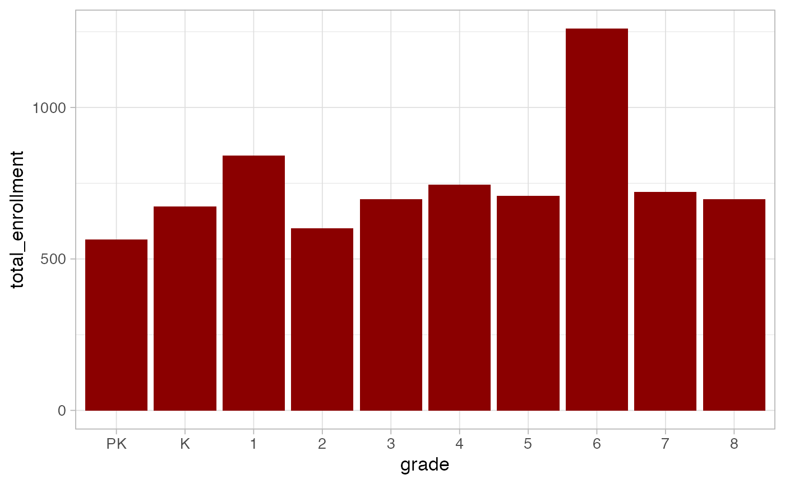
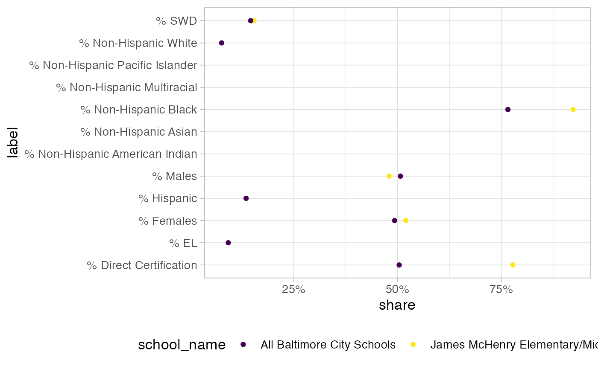
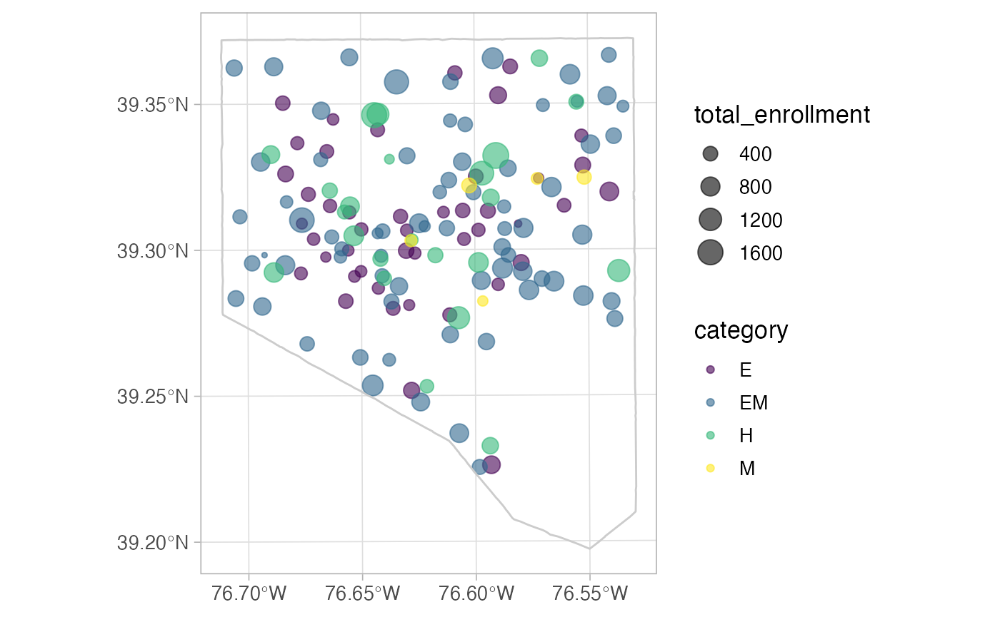
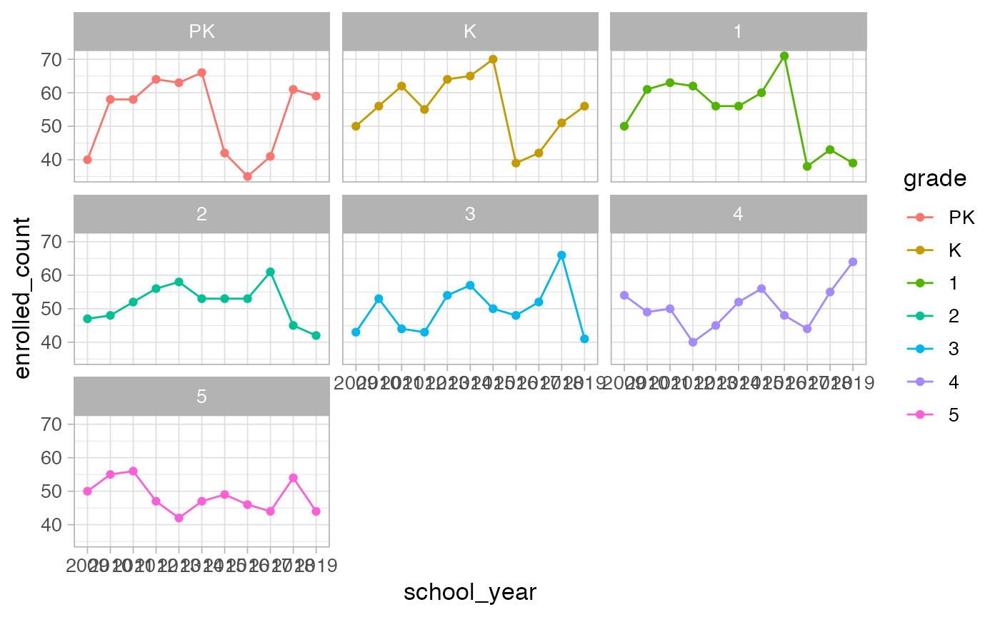

Enrollment and demographic data
enrollment_demographic_data.RmdThe Baltimore City Public School System provides data on total enrollment and selected demographic characteristics by grade and grade range for all schools. The data included in this package is imported from the original Excel file. You can see the import process by looking at the bcpss_data.R on the bcpss GitHub repo.
For this article, I am using the dplyr and ggplot2 packages from the tidyverse family and the sf package which required for the mapbaltimore package I use in the mapping section.
library(bcpss)
library(dplyr)
#>
#> Attaching package: 'dplyr'
#> The following objects are masked from 'package:stats':
#>
#> filter, lag
#> The following objects are masked from 'package:base':
#>
#> intersect, setdiff, setequal, union
library(ggplot2)
library(sf)
#> Linking to GEOS 3.9.0, GDAL 3.2.0, PROJ 7.2.0
# Set a theme for the example plots
theme_set(theme_light(base_size = 13))The enrollment and demographic data is available in both a wide and long format. Both data sets are not 100% ‘tidy’ because they include data for individual grades (grade) and grade ranges (grade_range). Both of these columns are factors ordered from lowest grade to highest (or lowest to highest starting grade for grade ranges).
The grades in the original data from BCPS included one value (“93”) where I am not sure what the corresponding category is. Grade ranges are overlapping, for example, including “PK to K” and “PK to 5”. The total_enrollment column always indicates the total number of students at the school in the grade or grade range.
The data includes demographic characteristics including non-Hispanic racial categories, Hispanic identity, English learners (percent_el), students with disabilities (percent_swd), and Direct Certification (percent_direct_certification). Direct certification is a relatively new category that is used in the same way that data on student participation in free and reduced-price meal (FRM) programs have been used as a proxy for student economic disadvantage.
Options for wide and long format data
The wide format (enrollment_demographics_SY1920) is most useful for comparing demographic characteristics to one another. For example, see this scatter plot showing positive association between the share of English language learners and share of Hispanic students.
enrollment_demographics_SY1920 %>%
filter(grade_range == "All Grades") %>%
ggplot(aes(x = percent_hispanic, y = percent_el)) +
geom_point() +
geom_smooth() +
scale_x_continuous(labels = scales::percent) +
scale_y_continuous(labels = scales::percent)
#> `geom_smooth()` using method = 'loess' and formula 'y ~ x'
#> Warning: Removed 124 rows containing non-finite values (stat_smooth).
#> Warning: Removed 124 rows containing missing values (geom_point).
In the long format, the value of these 12 characteristics are found in the share column which shows the percent share of students in the grade or grade range belonging to the group indicated by variable and label columns.
# Look at enrollment and demographic data in a long format
glimpse(enrollment_demographics_SY1920_long)
#> Rows: 26,916
#> Columns: 10
#> $ school_number <int> 0, 0, 0, 0, 0, 0, 0, 0, 0, 0, 0, 0, 0, 0, 0, 0, 0, 0…
#> $ school_name <chr> "All Baltimore City Schools", "All Baltimore City Sc…
#> $ management_type <chr> NA, NA, NA, NA, NA, NA, NA, NA, NA, NA, NA, NA, NA, …
#> $ grade_band <fct> NA, NA, NA, NA, NA, NA, NA, NA, NA, NA, NA, NA, NA, …
#> $ grade <fct> PK, PK, PK, PK, PK, PK, PK, PK, PK, PK, PK, PK, K, K…
#> $ grade_range <fct> NA, NA, NA, NA, NA, NA, NA, NA, NA, NA, NA, NA, NA, …
#> $ total_enrollment <dbl> 4283, 4283, 4283, 4283, 4283, 4283, 4283, 4283, 4283…
#> $ variable <chr> "percent_males", "percent_females", "percent_direct_…
#> $ share <dbl> 0.499, 0.501, 0.551, 0.059, 0.109, 0.757, 0.073, 0.1…
#> $ label <chr> "% Males", "% Females", "% Direct Certification", "%…Summary rows for all city schools
Both data sets include summary rows that aggregate data across all Baltimore City Schools by grade and grade range. These summary rows use “0” as the school_number and “All Baltimore City Schools” as the school_name. The following plot shows how to filter the data to make a simple Cleveland dot plot. The data on percent non-Hispanic Pacific Islander, Multi-racial, and Asian are all excluded from the citywide summary data.
enrollment_demographics_allschools <- enrollment_demographics_SY1920_long %>%
filter(grade_range == "All Grades",
school_name == "All Baltimore City Schools")
enrollment_demographics_allschools %>%
ggplot() +
geom_point(aes(y = label, x = share), size = 3, color = "darkblue") +
scale_x_continuous(labels = scales::percent)
#> Warning: Removed 4 rows containing missing values (geom_point).
Plotting data for a single school
You can find a list of city school names and school numbers by taking a look at the corresponding columns in the data.
# Show first five school names
unique(enrollment_demographics_SY1920$school_name)[1:5]
#> [1] "All Baltimore City Schools"
#> [2] "Steuart Hill Academic Academy"
#> [3] "Cecil Elementary School"
#> [4] "City Springs Elementary/Middle School"
#> [5] "James McHenry Elementary/Middle School"
# Show first five school numbers
unique(enrollment_demographics_SY1920$school_number)[1:5]
#> [1] 0 4 7 8 10To look at enrollment or demographic characteristics for a school by grade and not grade range, you can simply filter out all missing values in the grade column. For example, see this bar chart showing enrollment by grade at James McHenry Elementary/Middle School in southwest Baltimore.
enrollment_demographics_SY1920_long %>%
filter(school_name == "James McHenry Elementary/Middle School",
!is.na(grade)) %>%
ggplot() +
geom_col(aes(x = grade, y = total_enrollment),
fill = "darkred")
You can also use the summary data we looked at earlier to compare an individual school to city schools as a whole. This example reuses the enrollment_demographics_allschools object created in the prior section.
enrollment_demographics_SY1920_long %>%
filter(school_name == "James McHenry Elementary/Middle School",
grade_range == "All Grades") %>%
bind_rows(enrollment_demographics_allschools) %>%
ggplot(aes(y = label, x = share, color = school_name), size = 3, alpha = 0.8) +
geom_point() +
scale_x_continuous(labels = scales::percent) +
scale_color_viridis_d() +
theme(legend.position = "bottom")
#> Warning: Removed 11 rows containing missing values (geom_point).
Mapping enrollment and demographic data
If you are interested in connecting the enrollment and demographic data to the spatial data included with this package, you should be aware that the spatial data refers to schools and school numbers as programs and program numbers. Here is an example of how to join the school or program locations (bcps_programs_SY2021) to the enrollment data using the dplyr left_join function and then mapping schools by total enrollment. This example uses the Baltimore City boundary data from my mapbaltimore package so you must have that package installed in order to reproduce this map.
enrollment_demographics_SY1920_allgrades <- enrollment_demographics_SY1920 %>%
# Filter to rows with data on all grades
filter(grade_range == "All Grades") %>%
# Select school_number and total_enrollment variables
select(school_number, total_enrollment)
bcps_programs_SY2021 %>%
# Filter to elementary, elementary/middle, middle, and high schools
filter(category %in% c("E", "EM", "M", "H")) %>%
# Join enrollment data to program location data
left_join(enrollment_demographics_SY1920_allgrades,
by = c("program_number" = "school_number")) %>%
ggplot() +
geom_sf(aes(size = total_enrollment, color = category), alpha = 0.6) +
# Add outline of city boundaries using mapbaltimore package
geom_sf(data = mapbaltimore::baltimore_city, fill = NA, color = "gray80") +
scale_color_viridis_d()
Enrollment by year with MSDE data
This package also includes enrollment data by year from the Maryland State Department of Education (MSDE) covering the period from 2009 to 2019. Enrollment data for each year is created in the fall of the school year so data from 2009 is relevant for the 2009-2010 school year. To access data on all schools filter the school_number to 0 and filter to grade ranges by using is.na(grade) as this example illustrates:
enrollment_msde_SY0919 %>%
filter(school_number == 0, is.na(grade)) %>%
ggplot(aes(x = school_year,
y = enrolled_count,
color = grade_range)) +
geom_point() +
geom_line(aes(group = grade_range)) +
scale_y_log10()
Plotting enrollment data for a single school is similar to the approach outlined in the previous section but users should note that the school names used by MSDE do differ slightly from the school names used by BCPSS.
enrollment_msde_SY0919 %>%
filter(school_name == "Cecil Elementary",
!is.na(grade),
!is.na(enrolled_count)) %>%
ggplot(aes(x = school_year,
y = enrolled_count,
color = grade)) +
geom_point() +
geom_line(aes(group = grade)) +
facet_wrap(~ grade)